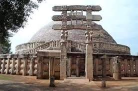

Religión
Durante todo el período del imperio, el brahmanismo fue una religión importante. Los mauryas también favorecían el brahmanismo como el jainismo y el budismo. Sectas religiosas menores como la de Ajivika también recibieron patrocinio. Varios Textos hindúes fueron escritos durante el período maurya.
Chandragupta maurya era un seguidor de la religión védica (brahmanismo). Según el viajero griego Megástenes, el rey realizaba regularmente rituales y sacrificios brahmánicos. Según un texto jainista del siglo XII, Chandragupta Maurya siguió el jainismo después de retirarse, cuando renunció a su trono y posesiones materiales para unirse a un grupo errante de monjes jainistas y en sus últimos días, observó la rigurosa pero autodidacta -Ritual purificador jainista de santhara (ayuno hasta la muerte), en Shravana Belgola en Karnataka.
Sin embargo, algunos eruditos como Radhakumud Mukherjee no están de acuerdo con la tradición jainista que afirma esta historia. Samprati, nieto de Ashoka, patrocinador del jainismo se vio influido por las enseñanzas de monjes jainistas como Suhastin y se dice que construyó 125.000 derasar en toda la India. Algunos de ellos todavía se encuentran en las ciudades de Ahmedabad, Viramgam, Ujjain y Palitana. También se dice que al igual que Ashoka, Samprati envió mensajeros y predicadores a Grecia, Persia y el Medio Oriente por la expansión del jainismo, pero, hasta la fecha, no se ha encontrado pruebas que respalden esta afirmación.

Los textos budistas Samantapasadikay Mahavamsa sugieren que Bindusara siguió el brahmanismo hindú, llamándolo "Brahmana bhatto" ("monje de los Brahmanas").
Magadha, el centro del imperio, fue también el lugar de nacimiento del budismo. Ashoka inicialmente practicó el brahmanismo pero luego siguió el budismo; Después de la Guerra de Kalinga, renunció al expansionismo y la agresión, y a los mandatos más severos del Arthashastra sobre el uso de la fuerza, vigilancia intensiva y medidas despiadadas para la recaudación de impuestos y contra los rebeldes.
Ashoka envió una misión dirigida por su hijo Mahinda (monje budista)] y su hija Sanghamitta a Sri Lanka, cuyo rey Tissa estaba tan encantado con ideales budistas que él mismo los adoptó e hizo del budismo la religión estatal. Ashoka envió muchas misiones budistas a Asia occidental, Grecia y Sudeste asiático, y encargó la construcción de monasterios y escuelas, así como la publicación de literatura budista en todo el imperio.
Se cree que construyó hasta 84.000 estupas en toda la India, como Sanchi y Templo Mahabodhi, y aumentó la popularidad del budismo en Afganistán y Tailandia. Ashoka ayudó a convocar un concilio budista —el tercero— de las órdenes budistas de la India y el sur de Asia cerca de su capital, un consejo que emprendió mucho trabajo de reforma y expansión de la religión budista. Los comerciantes indios abrazaron el budismo y desempeñaron un papel importante en la difusión de la religión en todo el Imperio Maurya.